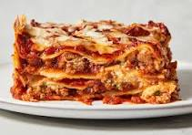

Home Page
Lasagna

Introduction
Lasagna is a classic Itailan dish made with layers of flat pasta sheets, savory meat
sauce, creamy ricotta or cottage cheese, and melty cheeses like mozzarella and parmesan.
it's hearty and satisfying casserole perfect for feeding a crowd.
Ingredients
For Meat sauce
- Olive oil
- Crushed tomatoes
- Onion
- Garlic cloves
- Ground beef
- Tomato paste
- Dried oregano
- Basil (fresh or dried)
- Pepper
- Salt
For Lasgna Layers
- Lasagna noodles (no pre-cooking required)
- Ricotta or cottage cheese
- Mozzarella cheese, shredded
- Parmesan cheese, grated
Steps to Make Lasagna
- Prepare the Meat Sauce
- Assemble the Lasagna
- Bake and Enjoy